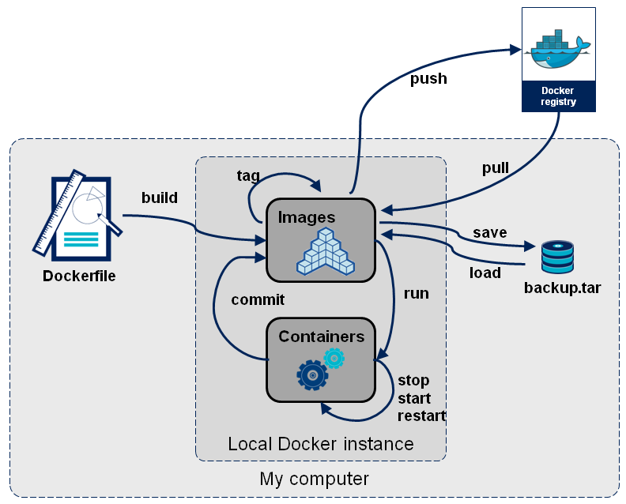
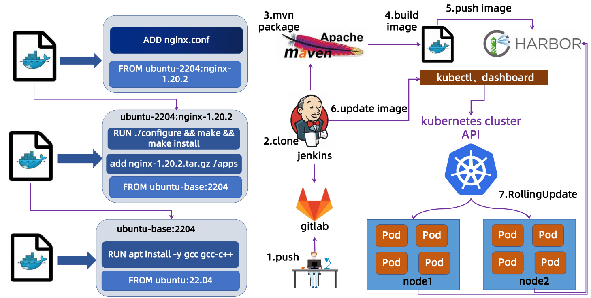
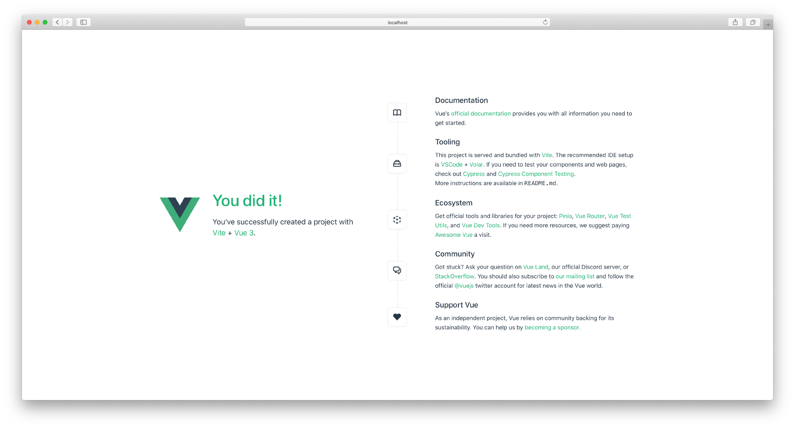
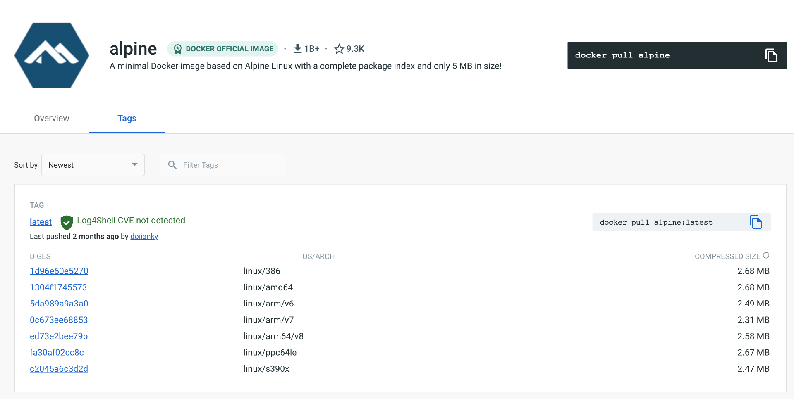
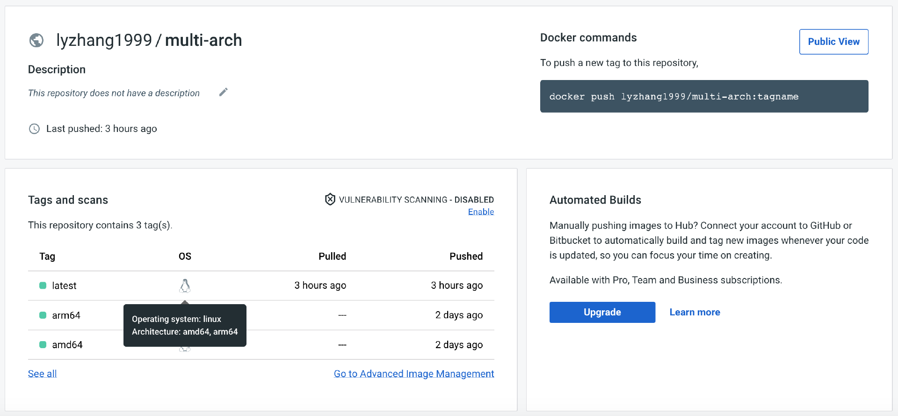
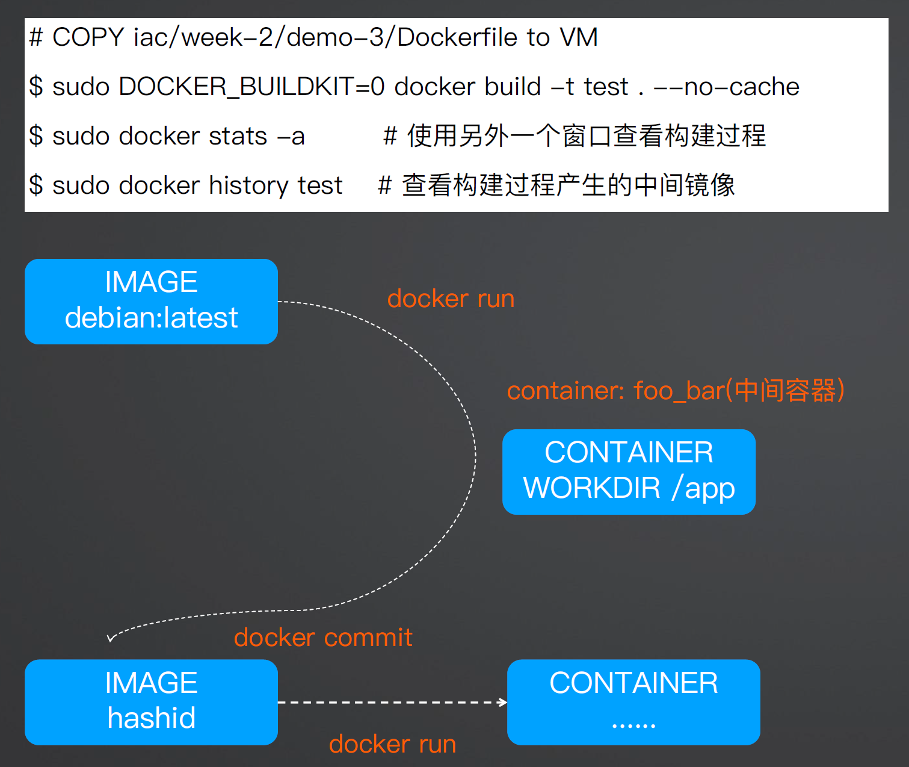
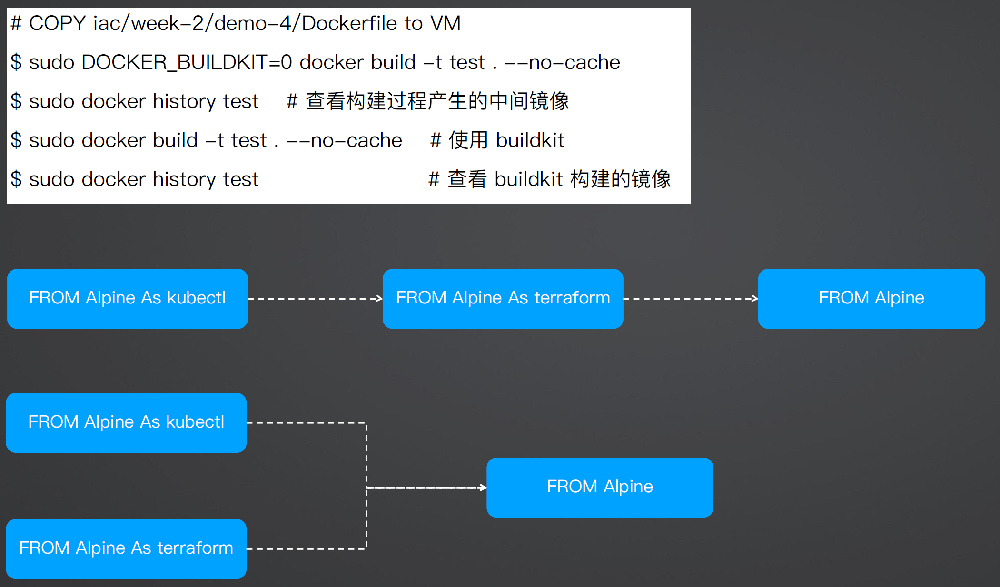

Docker 镜像管理
镜像就是静态的应用容器，容器就是动态的应用镜像，两者互相依存，互相转化，密不可分。
镜像管理：

制作镜像 - 上传镜像 - 下载镜像 - 查找镜像 - 导出镜像 - 导入镜像 - 删除镜像 - 查询镜像
镜像的分发案例：

常用的镜像操作
docker pull 从远端仓库拉取镜像， docker images 列出当前本地已有的镜像。
docker pull 的用法还是比较简单的，和普通的下载非常像，不过我们需要知道镜像的命名规则，这样才能准确地获取到我们想要的容器镜像。
镜像的完整名字由两个部分组成，名字和标签，中间用 : 连接起来。
名字表明了应用的身份，比如busybox、Alpine、Nginx、Redis等等。标签（tag）则可以理解成是为了区分不同版本的应用而做的额外标记，任何字符串都可以，比如3.15是纯数字的版本号、jammy是项目代号、1.21-alpine是版本号加操作系统名等等。其中有一个比较特殊的标签叫“latest”，它是默认的标签，如果只提供名字没有附带标签，那么就会使用这个默认的“latest”标签。
那么现在，你就可以把名字和标签组合起来，使用 docker pull 来拉取一些镜像了：
docker pull alpine:3.15
docker pull ubuntu:jammy
docker pull nginx:1.21-alpine
docker pull nginx:alpine
docker pull redis
有了镜像之后，可以用 docker images 命令来看看它们的具体信息。
在这个列表里，REPOSITORY列就是镜像的名字，TAG就是这个镜像的标签，第三列“IMAGE ID” 可以说是镜像唯一的标识，就好像是身份证号一样。比如这里我们可以用“ubuntu:jammy”来表示Ubuntu 22.04镜像，同样也可以用它的ID“d4c2c……”来表示。
另外，你可能还会注意到，截图里的两个镜像“nginx:1.21-alpine”和“nginx:alpine”的IMAGE ID是一样的，都是“a63aa……”。这其实也很好理解，这就像是人的身份证号码是唯一的，但可以有大名、小名、昵称、绰号，同一个镜像也可以打上不同的标签，这样应用在不同的场合就更容易理解。
IMAGE ID还有一个好处，因为它是十六进制形式且唯一，Docker特意为它提供了“短路”操作，在本地使用镜像的时候，我们不用像名字那样要完全写出来这一长串数字，通常只需要写出前三位就能够快速定位，在镜像数量比较少的时候用两位甚至一位数字也许就可以了。
来看另一个镜像操作命令 docker rmi ，它用来删除不再使用的镜像，可以节约磁盘空间，注意命令 rmi ，实际上是“remove image”的简写。
docker rmi redis
docker rmi d4c
这里的第一个 rmi 删除了Redis镜像，因为没有显式写出标签，默认使用的就是“latest”。第二个 rmi 没有给出名字，而是直接使用了IMAGE ID的前三位，也就是“d4c”，Docker就会直接找到这个ID前缀的镜像然后删除。
镜像管理命令：
# docker image --help
Usage: docker image COMMAND
Manage images
Commands:
build #从Dockerfile文件构建新的镜像
history #查询镜像的构建历史
import #从本地或远程的压缩包等导入镜像，可以指定导入后的镜像名称
inspect #显示一个或多个镜像的详细信息
load #从一个tar包或标准输入导入镜像
ls #列出本地的所有镜像
prune #删除本地未使用的镜像
pull #从镜像仓库下载镜像到本地
push #从本地上传镜像到镜像仓库
rmi #删除一个或者多个本地镜像
save #保存一个或者多个镜像到一个tar包(默认保存到当前终端的标准输出)
tag #对镜像打一个新的标签
docker search centos #搜索镜像
docker images prune #删除没有 tag 的镜像
导出镜像，两种方式效果一样，推荐用 >
docker save nginx:latest -o nginx.tar
docker save nginx:latest > nginx.tar
将保存的镜像导入，两种方式效果一样，推荐用 <
docker load -i nginx.tar
docker load < nginx.tar
删除标签为 none 的镜像
docker rmi -f docker images | grep none | awk '{print $3}'
Image vs Container 镜像和容器对比
Image 镜像
- 镜像是容器的定义，包括文件系统、环境变量以及默认的启动命令
- Docker image 是一个
read-only文件 - 这个文件包含文件系统，源码，库文件，依赖，工具等一些运行application所需要的文件
- 可以理解成一个模板
- docker image具有分层的概念
Container 容器
- 容器是镜像的实例，使用同一个镜像启动的容器是相互隔离的，不同的容器之间也是相互隔离的
- “一个运行中的docker image”
- 实质是复制image并在image最上层加上一层
read-write的层 （称之为container layer,容器层） - 基于同一个 image 可以创建多个 container
构建一个镜像
如何简单的构建一个镜像
Docker为用户自己定义镜像提供了一个叫做Dockerfile的文件，在这个Dockerfile文件里，你可以设定自己镜像的创建步骤。
如果我们自己来做一个镜像也不难，举个例子，我们可以一起来写一个Dockerfile，体会一下整个过程。
操作之前，我们首先要理解这个Dockerfile做了什么，其实它很简单，只有下面这几行：
FROM python:slim
LABEL image.authors="hide in bash"
LABEL version="1.0"
WORKDIR /opt/app
COPY ./requirements.txt /opt/app/requirements.txt
COPY gpt_chat.py /opt/app/gpt_chat.py
RUN pip install -r requirements.txt
EXPOSE 7860
CMD ["python3", "/opt/app/gpt_chat.py"]
我们看下它做了哪几件事：将依赖文件和python代码拷贝到 python:slim 镜像中，运行pip命令安装所需要的依赖文件，最后指定镜像运行时的命令。
有了这个镜像，我们希望容器启动后，就运行这个python代码。
我们具体来看这个Dockerfile的每一行，第一个大写的词都是Dockerfile专门定义的指令，也就是 FROM、 RUN、 COPY、 ADD、 CMD，这些指令都很基础，所以我们不做详细解释了，你可以参考Dockerfile的 官方文档。
我们写完这个 Dockerfile 之后，想要让它变成一个镜像，还需要执行一下 docker build 命令。
下面这个命令中 -f ./Dockerfile 指定Dockerfile文件， -t gpt_chat:v1 指定了生成出来的镜像名，它的格式是"name:tag"，这个镜像名也是后面启动容器需要用到的。
# docker build -t gpt_chat:v1 -f ./Dockerfile .
docker build 执行成功之后，我们再运行 docker images 这个命令，就可以看到生成的镜像了。
# docker images
REPOSITORY TAG IMAGEID CREATED SIZE
gpt_chat v1 c682fc3d4b9a 4 seconds ago 277MB
通过脚本构建镜像
#!/bin/bash
TAG=$1
docker build -t harbor.ketitx.com/pythonlearning/image:${TAG} .
docker push harbor.ketitx.com/pythonlearning/image:${TAG}
构建容器镜像的基本套路
- 使用 FROM 命令指定一个已经安装了特定编程语言编译工具的基础镜像。你可以在官方镜像仓库找到你所需的任何基础镜像。
- 使用 WORKDIR 命令配置一个镜像的工作目录，如 WORKDIR /app。
- 使用 COPY 命令将本地目录的源码复制到镜像的工作目录下，例如 COPY 。
- 使用 RUN 命令下载业务依赖，例如 pip3 install。如果是静态语言，那么要进一步编译源码生成可执行文件。
- 最后，使用 CMD 命令配置镜像的启动命令，也就是将你的业务代码启动起来。
实际上，不管是什么编程语言，构建镜像的方法都是大同小异的。我为你总结的这 5 个方法步骤可以满足我们构建容器镜像的最基本要求。
如何为不同语言快速构建多平台镜像
Java 应用容器化
常见的 Java 应用启动方式有两种，这也就意味着镜像构建方式也有两种。一种是将应用打包成 Jar 包，在镜像内直接启动应用 Jar 包来构建镜像。另一种是在容器里通过 Spring Boot 插件直接启动应用。
启动 Jar 包的构建方式
以 Spring Boot 和 Maven 为例，我已经提前创建好了一个 Demo 应用，我们以它为例子介绍如何使用 Jar 包构建镜像。
ls -a
. .DS_Store .gitignore Dockerfile mvnw pom.xml
.. .dockerignore .mvn Dockerfile-Boot mvnw.cmd src
首先，src 目录下的 src/main/java/com/example/demo/DemoApplication.java 文件的内容是 Demo 应用的主体文件，它包含一个 /hello 接口，使用 Get 请求访问后会返回 “Hello World”。
package com.example.demo;
import org.springframework.boot.SpringApplication;
import org.springframework.boot.autoconfigure.SpringBootApplication;
import org.springframework.web.bind.annotation.GetMapping;
import org.springframework.web.bind.annotation.RequestParam;
import org.springframework.web.bind.annotation.RestController;
@SpringBootApplication
@RestController
public class DemoApplication {
public static void main(String[] args) {
SpringApplication.run(DemoApplication.class, args);
}
@GetMapping("/hello")
public String hello(@RequestParam(value = "name", defaultValue = "World") String name) {
return String.format("Hello %s!", name);
}
}
Demo 应用的主体内容虽然很简单，但它代表了 Spring Boot + Maven 的典型组合，只要符合这两种技术选型，你都可以直接参考这里的例子来容器化你的业务应用。
接下来，是构建镜像的核心内容 Dockerfile 文件。
# syntax=docker/dockerfile:1
FROM eclipse-temurin:17-jdk-jammy as builder
WORKDIR /opt/app
COPY .mvn/ .mvn
COPY mvnw pom.xml ./
RUN ./mvnw dependency:go-offline
COPY ./src ./src
RUN ./mvnw clean install
FROM eclipse-temurin:17-jre-jammy
WORKDIR /opt/app
EXPOSE 8080
COPY --from=builder /opt/app/target/*.jar /opt/app/*.jar
CMD ["java", "-jar", "/opt/app/*.jar" ]
这里使用了多阶段构建的方式，你可以理解为，第一个阶段的构建产物可以作为下一个阶段的输入，这里你只需要先知道这种用法就好，后面的课程我们还会有更详细的介绍。
我们来看第一阶段的构建，也就是从第 3 行到第 9 行。 第 3 行 FROM 表示把 eclipse-temurin:17-jdk-jammy 作为 build 阶段的基础镜像，然后使用 WORKDIR 关键字指定了工作目录为 /opt/app，后续的文件操作都会在这个工作目录下展开。
接下来，第 5 和第 6 行通过 COPY 关键字将 .mvn 目录和 mvnw、pom.xml 文件复制到了工作目录下，第 7 行通过 RUN 关键字运行 ./mvnw dependency:go-offline 来安装依赖。然后，第 8 行将 src 目录复制到了镜像中，第 9 行使用 RUN 关键字执行 ./mvnw clean install 进行编译。
第 12 行到 16 行是第二个构建阶段。 第 12 行表示使用 eclipse-temurin:17-jre-jammy 作为基础镜像，第 13 行同样指定了工作目录为 /opt/app，第 14 行的 EXPOSE 关键字之前我们有提到过，它是一个备注功能，并不是要暴露真实容器端口的意思。
第 15 行的 COPY 语句比较复杂，它指的是从 builder 阶段也就是将第一个阶段位于 /opt/app/target/ 目录下所有的 .jar 文件都拷贝到当前构建阶段镜像的 /opt/app/ 目录下。第 16 行使用 CMD 关键字定义了启动命令，也就是通过 java -jar 的方式启动应用。
最后，.dockerignore 的功能和我们熟悉的 .gitignore 文件功能类似，它指的是在构建过程中需要忽略的文件或目录，合理的文件忽略策略将有助于提高构建镜像的速度。在这个例子中，因为我们要在容器里重新编译应用，所以我们忽略了本地的 target 目录。
接下来，我们就可以使用 docker build 命令来构建镜像了。
$ docker build -t spring-boot .
当镜像构建完成后，我们要使用 docker run 命令启动镜像，并通过 -p 暴露端口。
$ docker run -p 8080:8080 spring-boot
......
2022-10-05 03:59:48.746 INFO 1 --- [ main] com.example.demo.DemoApplication : Starting DemoApplication v0.0.1-SNAPSHOT using Java 17.0.4.1 on da50d0bb2460 with PID 1 (/opt/app/*.jar started by root in /opt/app)
2022-10-05 03:59:48.748 INFO 1 --- [ main] com.example.demo.DemoApplication : No active profile set, falling back to 1 default profile: "default"
2022-10-05 03:59:49.643 INFO 1 --- [ main] o.s.b.w.embedded.tomcat.TomcatWebServer : Tomcat initialized with port(s): 8080 (http)
2022-10-05 03:59:49.655 INFO 1 --- [ main] o.apache.catalina.core.StandardService : Starting service [Tomcat]
2022-10-05 03:59:49.656 INFO 1 --- [ main] org.apache.catalina.core.StandardEngine : Starting Servlet engine: [Apache Tomcat/9.0.65]
2022-10-05 03:59:49.754 INFO 1 --- [ main] o.a.c.c.C.[Tomcat].[localhost].[/] : Initializing Spring embedded WebApplicationContext
2022-10-05 03:59:49.755 INFO 1 --- [ main] w.s.c.ServletWebServerApplicationContext : Root WebApplicationContext: initialization completed in 933 ms
2022-10-05 03:59:50.105 INFO 1 --- [ main] o.s.b.w.embedded.tomcat.TomcatWebServer : Tomcat started on port(s): 8080 (http) with context path ''
2022-10-05 03:59:50.117 INFO 1 --- [ main] com.example.demo.DemoApplication : Started DemoApplication in 1.796 seconds (JVM running for 2.221)
打开一个新的命令行终端，并使用 curl 访问 hello 接口验证返回内容。
$ curl localhost:8080/hello
Hello World!
如果要终止 spring-boot 应用，你可以回到执行 docker run 的命令行终端，并使用 ctrll+c 来停止容器。
如果你跟着我操作到了这里，说明你也已经成功以 Jar 包的方式将 Spring Boot 应用构建为 Docker 镜像了。
Spring Boot 插件的构建方式
除了使用 Jar 包，Spring Boot 应用还可以通过 ./mvnw spring-boot:run 的方式启动，这意味着我们也可以把它作为镜像的启动命令。
我还是以 Spring Boot 示例应用为例，我在示例应用 Dockerfile 文件同级目录下已经提前准备好了 Dockerfile-Boot 文件，下面是该文件的内容。
# syntax=docker/dockerfile:1
FROM eclipse-temurin:17-jdk-jammy
WORKDIR /app
COPY .mvn/ .mvn
COPY mvnw pom.xml ./
RUN ./mvnw dependency:resolve
COPY src ./src
CMD ["./mvnw", "spring-boot:run"]
相比较 Jar 的启动方式，Spring Boot 插件的启动方式显得更加简单。在构建过程中，我们实际上还用了一个小技巧：第 7 和第 8 行代表单独复制了依赖清单文件 pom.xml 而不是复制整个根目录，目的是在依赖不变的情况下充分利用 Docker 构建缓存。
在这个 Dockerfile 文件中有两条关键的命令，一个 mvnw dependency:resolve 用于安装依赖，另一个 mvnw spring-boot:run 命令用来启动应用。
接下来，我们使用 docker build 命令构建镜像，这里要注意增加 -f 参数指定新的 Dockerfile 文件。
$ docker build -t spring-boot . -f Dockerfile-Boot
镜像构建成功后，使用 docker run 命令启动镜像。
$ docker run -p 8080:8080 spring-boot
最后，你可以尝试用 curl 访问 localhost:8080/hello 接口，将会得到 Hello World 返回结果。
Spring Boot 插件的启动方式虽然比较简单，但它将构建过程延迟到了启动阶段，并且依赖镜像的 JDK 工具，对于生产环境来说这些都不是必要的。如果你通过 docker images 命令仔细对比两次构建镜像占用的空间大小，你会发现，第一种方式构建生成的镜像大概在 280M 左右，而第二种构建方式生成的镜像在 500M 左右。在实际的生产环境中，我更推荐你使用第一种方式来构建 Java 镜像。
Golang 应用容器化
下面我们继续来看 Go 应用的容器化。
以 Echo 框架为例，我提前编写好了一个简单的示例应用。在将示例应用克隆到本地后，你可以进入 docker/13/golang 目录并查看。
$ cd gitops/docker/13/golang
$ ls -al
-rw-r--r-- 1 weiwang staff 292 10 5 14:16 Dockerfile
-rw-r--r-- 1 weiwang staff 599 10 5 14:12 go.mod
-rw-r--r-- 1 weiwang staff 2825 10 5 14:12 go.sum
-rw-r--r-- 1 weiwang staff 235 10 5 14:13 main.go
main.go 文件是应用的主体文件，包含一个 /hello 接口，通过 Get 方法请求后，将返回 Hello World 字符串。
package main
import (
"net/http"
"github.com/labstack/echo/v4"
)
func main() {
e := echo.New()
e.GET("/hello", func(c echo.Context) error {
return c.String(http.StatusOK, "Hello World Golang")
})
e.Logger.Fatal(e.Start(":8080"))
}
接下来，我们来看 Dockerfile 的内容。
# syntax=docker/dockerfile:1
FROM golang:1.17 as builder
WORKDIR /opt/app
COPY . .
RUN go build -o example
FROM ubuntu:latest
WORKDIR /opt/app
COPY --from=builder /opt/app/example /opt/app/example
EXPOSE 8080
CMD ["/opt/app/example"]
同样地，这个 Dockerfile 包含了两个构建阶段，第一个构建阶段是以 golang:1.17 为基础镜像，然后我们执行 go build 命令编译并输出可执行文件，将其命名为 example。
第二个构建阶段是以 ubuntu:latest 为基础镜像，第 9 行通过 COPY 关键字将第一个阶段构建的 example 可执行文件复制到镜像的 /opt/app/ 目录下，最后，使用 CMD 来运行 example 启动应用。
现在，我们可以通过 docker build 来构建镜像。
$ docker build -t golang .
接下来，使用 docker run 来启动镜像。
$ docker run --publish 8080:8080 golang
____ __
/ __/___/ / ___
/ _// __/ _ \/ _ \
/___/\__/_//_/\___/ v4.9.0
High performance, minimalist Go web framework
https://echo.labstack.com
____________________________________O/_______
O\
⇨ http server started on [::]:8080
现在，你可以使用 curl 命令来访问 localhost:8080/hello 接口，查看是否返回了预期的 Hello World Golang 字符串。
Node.js 应用容器化
以 Express.js 框架为例，我已经提前编写好了一个简单示例，在将示例应用克隆到本地后，你可以进入 docker/13/node 目录并查看。
$ cd gitops/docker/13/node
$ ls -al
-rw-r--r-- 1 weiwang staff 12 10 5 16:45 .dockerignore
-rw-r--r-- 1 weiwang staff 589 10 5 16:39 Dockerfile
-rw-r--r-- 1 weiwang staff 230 10 5 16:44 app.js
drwxr-xr-x 60 weiwang staff 1920 10 5 16:26 node_modules
-rw-r--r-- 1 weiwang staff 39326 10 5 16:26 package-lock.json
-rw-r--r-- 1 weiwang staff 251 10 5 16:26 package.json
app.js 是示例应用的主体文件，包含一个 /hello 接口。当我们通过 Get 请求访问时，会返回“Hello World Node.js”字符串。
const express = require('express')
const app = express()
const port = 3000
app.get('/hello', (req, res) => {
res.send('Hello World Node.js')
})
app.listen(port, () => {
console.log(`Example app listening on port ${port}`)
})
接着我们来看一下 Dockerfile 文件的内容。
# syntax=docker/dockerfile:1
FROM node:latest AS build
RUN sed -i "s@http://\(deb\|security\).debian.org@https://mirrors.aliyun.com@g" /etc/apt/sources.list
RUN apt-get update && apt-get install -y dumb-init
WORKDIR /usr/src/app
COPY package*.json ./
RUN npm ci --only=production
FROM node:16.17.0-bullseye-slim
ENV NODE_ENV production
COPY --from=build /usr/bin/dumb-init /usr/bin/dumb-init
USER node
WORKDIR /usr/src/app
COPY --chown=node:node --from=build /usr/src/app/node_modules /usr/src/app/node_modules
COPY --chown=node:node . /usr/src/app
CMD ["dumb-init", "node", "app.js"]
这是一个由两个阶段组成的镜像构建方法。第一个阶段使用 node:latest 作为 build 阶段的基础镜像，同时安装了 dumb-init 组件。此外，这种构建方法还将 package.json 和 package-lock.json 复制到镜像内，并通过 npm ci --only=production 命令安装依赖。
从第 10 行开始是第二个构建阶段，这里使用了 node:16.17.0-bullseye-slim 作为基础镜像，此外，我们还为 Express 配置了 NODE\_ENV=production 的环境变量，代表在生产环境中使用。这会改变 Express.js 框架的默认配置，如日志等级、缓存处理策略等。然后，我们还要将 build 阶段安装的 dumb-init 组件、依赖以及源码复制到第二个阶段的镜像中，修改源码和依赖目录的用户组。最后，通过 CMD 命令使用 node 启动 app.js。
在将 NodeJS 容器化的过程中，有一个需要特别注意的细节，由于 NodeJS 并不是设计以 PID=1 的进程运行的，所以常规的启动方式并不能让 NodeJS 程序在容器内接收到 Kill 信号，这会导致 Node 进程不能被优雅终止（例如更新时突然中断），所以我们可以通过 dumb-init 组件来启动 Node 进程。
现在，我们可以通过 docker build 来构建镜像。
$ docker build -t nodejs .
接下来，使用 docker run 来启动镜像。
$ docker run -p 3000:3000 nodejs
Example app listening on port 3000
进行到这里，你可以使用 curl 命令来访问 localhost:3000/hello 接口，查看是否返回了预期的 Hello World Node.js 字符串。
Vue 应用容器化
常见的 Vue 应用容器化方案有两种，第一种是将 http-server 组件作为代理服务器来构建镜像，第二种是让 Nginx 作为代理服务器来构建镜像。接下来，我会分别介绍这两种镜像构建方式。
Http-server 构建方式
先看 http-server 的构建方式。以 Vue 框架为例，我已经提前将项目进行了初始化，接下来你需要将示例应用克隆到本地，然后进入 docker/13/vue/example 目录并查看。
$ cd gitops/docker/13/vue/example
$ ls -al
-rw-r--r-- 1 weiwang staff 12 10 5 17:26 .dockerignore
-rw-r--r-- 1 weiwang staff 172 10 5 17:27 Dockerfile
-rw-r--r-- 1 weiwang staff 0 10 5 17:34 Dockerfile-Nginx
-rw-r--r-- 1 weiwang staff 631 10 5 17:23 README.md
-rw-r--r-- 1 weiwang staff 337 10 5 17:23 index.html
......
在这个例子中，.dockerignore 文件的内容和 Node.js 应用一样，都是忽略 node\_modules 目录，以便加速镜像的构建速度。
接下来，我们重点关注 Dockerfile 文件内容。
# syntax=docker/dockerfile:1
FROM node:lts-alpine
RUN npm install -g http-server
WORKDIR /app
COPY package*.json ./
RUN npm install
COPY . .
RUN npm run build
EXPOSE 8080
CMD [ "http-server", "dist" ]
简单分析一下上面 Dockerfile 的内容。首先使用 node:lts-alpine 作为基础镜像，然后安装 http-server 作为代理服务器，第 6 行代表的含义是，将 package.json 和 package-lock.json 复制到镜像内，并使用 npm install 安装依赖。这里让依赖安装和源码安装解耦的目的是尽量使用 Docker 镜像构建缓存，只要在 package.json 文件内容不变的情况下，即便是源码改变，都可以使用已经下载好的 npm 依赖缓存。
依赖安装完毕后，第 8 行，我们要将项目源码复制到镜像内，并且通过 npm run build 来构建 dist 目录，最后，第 12 行，使用 http-server 来启动 dist 目录的静态文件。
现在，我们可以通过 docker build 来构建镜像了。
$ docker build -t vue .
接下来，使用 docker run 启动镜像。
$ docker run --publish 8080:8080 vue
Starting up http-server, serving dist
http-server version: 14.1.1
http-server settings:
CORS: disabled
......
到这里，你可以打开浏览器访问 http://localhost:8080 ，如果出现 Vue 示例应用的项目，说明镜像构建完成，如下图所示。

Nginx 构建方式
在上面的例子中，我们使用 http-server 来对外提供服务，这在开发和测试场景，或者是在小型的使用场景中是完全可以的。不过， 在正式的生产环境中，我推荐你把 Nginx 作为反向代理服务器来对外提供服务，它也是性能最好、使用最广泛和稳定性最高的一种方案。
在 Vue 示例项目的同级目录下，我已经创建好了名为 Dockerfile-Nginx 文件。
# syntax=docker/dockerfile:1
FROM node:lts-alpine as build-stage
WORKDIR /app
COPY package*.json ./
RUN npm install
COPY . .
RUN npm run build
FROM nginx:stable-alpine as production-stage
COPY --from=build-stage /app/dist /usr/share/nginx/html
EXPOSE 80
CMD ["nginx", "-g", "daemon off;"]
这个 Dockerfile 定义了两个构建阶段，第一个阶段是第 3 行到第 8 行的内容，其他的是第二阶段的内容。
第一阶段的构建过程和我们在上面提到的 http-server 的构建方式非常类似，它是以 node:lts-alpine 为基础镜像，同时复制 package.json 和 package-lock.json 并安装依赖，然后再复制项目源码并且执行 npm run build 来构建项目，生成 dist 目录。
第二个阶段的构建过程则是引入了一个新的 nginx:stable-alpine 镜像作为运行镜像，还将第一阶段构建的 dist 目录复制到了第二阶段的 /usr/share/nginx/html 目录中。这个目录是 Nginx 默认的网页目录，默认情况下，Nginx 将使用该目录的内容作为静态资源。最后第 13 行以前台的方式启动 Nginx。
现在，我们可以通过 docker build 来构建镜像。
$ docker build -t vue-nginx -f Dockerfile-Nginx .
接下来，使用 docker run 启动镜像。
$ docker run --publish 8080:80 vue-nginx
/docker-entrypoint.sh: /docker-entrypoint.d/ is not empty, will attempt to perform configuration
/docker-entrypoint.sh: Looking for shell scripts in /docker-entrypoint.d/
/docker-entrypoint.sh: Launching /docker-entrypoint.d/10-listen-on-ipv6-by-default.sh
10-listen-on-ipv6-by-default.sh: info: Getting the checksum of /etc/nginx/conf.d/default.conf
10-listen-on-ipv6-by-default.sh: info: Enabled listen on IPv6 in /etc/nginx/conf.d/default.conf
/docker-entrypoint.sh: Launching /docker-entrypoint.d/20-envsubst-on-templates.sh
......
最后，打开浏览器访问 http://localhost:8080 验证一下，如果出现和前面提到的 http-server 构建方式一样的 Vue 示例应用界面，就说明镜像构建成功了。
当然，构建镜像还有很多高级技巧，例如基础镜像的选择、多阶段构建、跨平台构建、buildkit 依赖缓存等等。
构建多平台镜像
在构建镜像时，Docker 会默认构建本机对应平台的镜像，例如常见的 AMD64 平台，这在大多数情况是适用的。
但是，当我们使用不同平台的设备尝试启动这个镜像时，可能会遇到下面的问题。
WARNING: The requested image's platform (linux/arm64/v8) does not match the detected host platform (linux/amd64) and no specific platform was requested
产生这个问题的原因是，构建和运行设备的 CPU 平台存在差异。在实际项目中，最典型的例子是构建镜像的计算机是 AMD64 架构，但运行镜像的机器是 ARM64。
要查看镜像适用于什么平台，你可以找到 DockerHub 镜像详情页。例如， Alpine 镜像适用的平台就可以在这个 链接 查看，详情页截图如下。

从这个页面我们可以看出，Apline 镜像适用的平台非常多，例如 Linux/386、Linux/amd64 等等。一般情况下，在构建镜像时，我们只会构建本机平台的镜像，但是当拉取镜像时，Docker 会自动拉取符合当前平台的镜像版本。
那么，怎么才能真正实现跨平台的 “一次构建，到处运行” 目标呢？Docker 为我们提供了构建多平台镜像的方法：buildx。
初始化
要使用 Buildx，首先需要创建构建器，你可以使用 docker buildx create 命令来创建它，并将其命名为 mybuilder。
$ docker buildx create --name builder
builder
然后，将 mybuilder 设置为默认的构建器。
$ docker buildx use builder
接下来，初始化构建器，这一步主要是启动 buildkit 容器。
$ docker buildx inspect --bootstrap
[+] Building 19.1s (1/1) FINISHED
=> [internal] booting buildkit 19.1s
=> => pulling image moby/buildkit:buildx-stable-1 18.3s
=> => creating container buildx_buildkit_mybuilder0 0.8s
Name: builder
Driver: docker-container
Nodes:
Name: mybuilder0
Endpoint: unix:///var/run/docker.sock
Status: running
Buildkit: v0.10.4
Platforms: linux/amd64, linux/amd64/v2, linux/amd64/v3, linux/arm64, linux/riscv64, linux/ppc64le, linux/s390x, linux/386, linux/mips64le, linux/mips64, linux/arm/v7, linux/arm/v6
初始化完成后，我们可以从返回结果中看到支持的平台，例如 Linux/amd64、Linux/arm64 等。
构建多平台镜像
这时候，我们就可以尝试使用 buildx 来构建多平台镜像了。我已经提前编写好了一个简单示例，在将示例应用克隆到本地后，你可以进入 docker/13/multi-arch 目录并查看。
$ cd gitops/docker/13/multi-arch
$ ls -al
-rw-r--r-- 1 weiwang staff 439 10 5 23:49 Dockerfile
-rw-r--r-- 1 weiwang staff 1075 10 5 18:34 go.mod
-rw-r--r-- 1 weiwang staff 6962 10 5 18:34 go.sum
-rw-r--r-- 1 weiwang staff 397 10 5 18:39 main.go
main.go 是示例应用的主体文件，我们启动一个 HTTP 服务器，访问根路径可以返回 Runtime 包的一些内置变量。
package main
import (
"net/http"
"runtime"
"github.com/gin-gonic/gin"
)
var (
r = gin.Default()
)
func main() {
r.GET("/", indexHandler)
r.Run(":8080")
}
func indexHandler(c *gin.Context) {
var osinfo = map[string]string{
"arch": runtime.GOARCH,
"os": runtime.GOOS,
"version": runtime.Version(),
}
c.JSON(http.StatusOK, osinfo)
}
相比较单一平台的构建方法，在构建多平台镜像的时候，我们可以在 Dockerfile 内使用一些内置变量，例如 BUILDPLATFORM、TARGETOS 和 TARGETARCH，他们分别对应构建平台（例如 Linux/amd64）、系统（例如 Linux）和架构（例如 AMD64）。
# syntax=docker/dockerfile:1
FROM --platform=$BUILDPLATFORM golang:1.18 as build
ARG TARGETOS TARGETARCH
WORKDIR /opt/app
COPY go.* ./
RUN go mod download
COPY . .
RUN --mount=type=cache,target=/root/.cache/go-build \
GOOS=$TARGETOS GOARCH=$TARGETARCH go build -o /opt/app/example .
FROM ubuntu:latest
WORKDIR /opt/app
COPY --from=build /opt/app/example ./example
CMD ["/opt/app/example"]
这个 Dockerfile 包含两个构建阶段，第一个构建阶段是从第 2 行至第 9 行，第二个构建阶段是从第 11 行到第 14 行。
我们先看第一个构建阶段。
第 2 行 FROM 基础镜像增加了一个 --platform=$BUILDPLATFORM 参数，它代表“强制使用不同平台的基础镜像”，例如 Linux/amd64。在没有该参数配置的情况下，Docker 默认会使用构建平台（本机）对应架构的基础镜像。
第 3 行 ARG 声明了使用两个内置变量 TARGETOS 和 TARGETARCH，TARGETOS 代表系统，例如 Linux，TARGETARCH 则代表平台，例如 Amd64。这两个参数将会在 Golang 交叉编译时生成对应平台的二进制文件。
第 4 行 WORKDIR 声明了工作目录。
第 5 行的意思是通过 COPY 将 go.mod 和 go.sum 拷贝到镜像中，并在第 6 行使用 RUN 来运行 go mod download 下载依赖。这样，在这两个文件不变的前提下，Docker 将使用构建缓存来加快构建速度。
在下载完依赖之后，我们通过第 7 行把所有源码文件复制到镜像内。
第 8 行有两个含义，首先， --mount=type=cache,target=/root/.cache/go-build 的目的是告诉Docker 使用 Golang 构建缓存，加快镜像构建的速度。接下来，GOOS=$TARGETOS GOARCH=$TARGETARCH go build -o /opt/app/example . 代表的含义是 Golang 交叉编译。注意，$TARGETOS 和 $TARGETARCH 是我们提到的内置变量，在具体构建镜像的时候，Docker 会帮我们填充进去。
第二个构建阶段比较简单，主要是使用 ubuntu:latest 基础镜像，将第一个构建阶段生成的二进制文件复制到镜像内，然后指定镜像的启动命令。
接下来，我们就可以开始构建多平台镜像了。
在开始构建之前，先执行 docker login 登录到 DockerHub。
$ docker login
Username:
Password:
Login Succeeded
接下来，使用 docker buildx build 一次性构建多平台镜像。
$ docker buildx build --platform linux/amd64,linux/arm64 -t lyzhang1999/multi-arch:latest --push .
在这个命令中，我们使用 --platform 参数指定了两个平台：Linux/amd64 和 Linux/arm64，同时 -t 参数指定了镜像的 Tag，而 --push 参数则代表构建完成后直接将镜像推送到 DockerHub。
还记得我们在 Dockerfile 第 2 行增加的 --platform=$BUILDPLATFORM 参数吗？当执行这条命令时，Docker 会分别使用 Amd64 和 Arm64 两个平台的 golang:1.18 镜像，并且在对应的镜像内执行编译过程。
执行完命令后，镜像会上传到 DockerHub 平台。进入这个镜像详情页我们就会发现它同时兼容了 Amd64 和 Arm64 两个平台。这样，多平台镜像就构建完成了。

Q：结合相关资料，请你简单分享一下为什么我们能构建非本地平台的镜像呢？（提示：Docker QEMU。）
减小镜像体积 —— 多阶段构建
大部分人在最开始编写的 Dockerfile 的时候都以“能用”作为首要目标，内容和 Golang 应用中的 Dockerfile-1 文件类似。
以下面的 go 代码
package main
import (
"net/http"
"github.com/labstack/echo/v4"
)
func main() {
e := echo.New()
e.GET("/hello", func(c echo.Context) error {
return c.String(http.StatusOK, "Hello World Golang")
})
e.Logger.Fatal(e.Start(":8080"))
}
module github.com/lyzhang1999/go-example
go 1.17
require (
github.com/labstack/echo/v4 v4.9.0 // indirect
github.com/labstack/gommon v0.3.1 // indirect
github.com/mattn/go-colorable v0.1.11 // indirect
github.com/mattn/go-isatty v0.0.14 // indirect
github.com/valyala/bytebufferpool v1.0.0 // indirect
github.com/valyala/fasttemplate v1.2.1 // indirect
golang.org/x/crypto v0.0.0-20210817164053-32db794688a5 // indirect
golang.org/x/net v0.0.0-20211015210444-4f30a5c0130f // indirect
golang.org/x/sys v0.0.0-20211103235746-7861aae1554b // indirect
golang.org/x/text v0.3.7 // indirect
)
github.com/davecgh/go-spew v1.1.0/go.mod h1:J7Y8YcW2NihsgmVo/mv3lAwl/skON4iLHjSsI+c5H38=
github.com/davecgh/go-spew v1.1.1/go.mod h1:J7Y8YcW2NihsgmVo/mv3lAwl/skON4iLHjSsI+c5H38=
github.com/labstack/echo/v4 v4.9.0 h1:wPOF1CE6gvt/kmbMR4dGzWvHMPT+sAEUJOwOTtvITVY=
github.com/labstack/echo/v4 v4.9.0/go.mod h1:xkCDAdFCIf8jsFQ5NnbK7oqaF/yU1A1X20Ltm0OvSks=
github.com/labstack/gommon v0.3.1 h1:OomWaJXm7xR6L1HmEtGyQf26TEn7V6X88mktX9kee9o=
github.com/labstack/gommon v0.3.1/go.mod h1:uW6kP17uPlLJsD3ijUYn3/M5bAxtlZhMI6m3MFxTMTM=
github.com/mattn/go-colorable v0.1.11 h1:nQ+aFkoE2TMGc0b68U2OKSexC+eq46+XwZzWXHRmPYs=
github.com/mattn/go-colorable v0.1.11/go.mod h1:u5H1YNBxpqRaxsYJYSkiCWKzEfiAb1Gb520KVy5xxl4=
github.com/mattn/go-isatty v0.0.14 h1:yVuAays6BHfxijgZPzw+3Zlu5yQgKGP2/hcQbHb7S9Y=
github.com/mattn/go-isatty v0.0.14/go.mod h1:7GGIvUiUoEMVVmxf/4nioHXj79iQHKdU27kJ6hsGG94=
github.com/pmezard/go-difflib v1.0.0/go.mod h1:iKH77koFhYxTK1pcRnkKkqfTogsbg7gZNVY4sRDYZ/4=
github.com/stretchr/objx v0.1.0/go.mod h1:HFkY916IF+rwdDfMAkV7OtwuqBVzrE8GR6GFx+wExME=
github.com/stretchr/testify v1.7.0/go.mod h1:6Fq8oRcR53rry900zMqJjRRixrwX3KX962/h/Wwjteg=
github.com/valyala/bytebufferpool v1.0.0 h1:GqA5TC/0021Y/b9FG4Oi9Mr3q7XYx6KllzawFIhcdPw=
github.com/valyala/bytebufferpool v1.0.0/go.mod h1:6bBcMArwyJ5K/AmCkWv1jt77kVWyCJ6HpOuEn7z0Csc=
github.com/valyala/fasttemplate v1.2.1 h1:TVEnxayobAdVkhQfrfes2IzOB6o+z4roRkPF52WA1u4=
github.com/valyala/fasttemplate v1.2.1/go.mod h1:KHLXt3tVN2HBp8eijSv/kGJopbvo7S+qRAEEKiv+SiQ=
golang.org/x/crypto v0.0.0-20210817164053-32db794688a5 h1:HWj/xjIHfjYU5nVXpTM0s39J9CbLn7Cc5a7IC5rwsMQ=
golang.org/x/crypto v0.0.0-20210817164053-32db794688a5/go.mod h1:GvvjBRRGRdwPK5ydBHafDWAxML/pGHZbMvKqRZ5+Abc=
golang.org/x/net v0.0.0-20211015210444-4f30a5c0130f h1:OfiFi4JbukWwe3lzw+xunroH1mnC1e2Gy5cxNJApiSY=
golang.org/x/net v0.0.0-20211015210444-4f30a5c0130f/go.mod h1:9nx3DQGgdP8bBQD5qxJ1jj9UTztislL4KSBs9R2vV5Y=
golang.org/x/sys v0.0.0-20210630005230-0f9fa26af87c/go.mod h1:oPkhp1MJrh7nUepCBck5+mAzfO9JrbApNNgaTdGDITg=
golang.org/x/sys v0.0.0-20210927094055-39ccf1dd6fa6/go.mod h1:oPkhp1MJrh7nUepCBck5+mAzfO9JrbApNNgaTdGDITg=
golang.org/x/sys v0.0.0-20211103235746-7861aae1554b h1:1VkfZQv42XQlA/jchYumAnv1UPo6RgF9rJFkTgZIxO4=
golang.org/x/sys v0.0.0-20211103235746-7861aae1554b/go.mod h1:oPkhp1MJrh7nUepCBck5+mAzfO9JrbApNNgaTdGDITg=
golang.org/x/text v0.3.7 h1:olpwvP2KacW1ZWvsR7uQhoyTYvKAupfQrRGBFM352Gk=
golang.org/x/text v0.3.7/go.mod h1:u+2+/6zg+i71rQMx5EYifcz6MCKuco9NR6JIITiCfzQ=
gopkg.in/check.v1 v0.0.0-20161208181325-20d25e280405/go.mod h1:Co6ibVJAznAaIkqp8huTwlJQCZ016jof/cbN4VW5Yz0=
gopkg.in/yaml.v3 v3.0.0-20200313102051-9f266ea9e77c/go.mod h1:K4uyk7z7BCEPqu6E+C64Yfv1cQ7kz7rIZviUmN+EgEM=
gopkg.in/yaml.v3 v3.0.0-20210107192922-496545a6307b/go.mod h1:K4uyk7z7BCEPqu6E+C64Yfv1cQ7kz7rIZviUmN+EgEM=
# syntax=docker/dockerfile:1
FROM golang:1.17
WORKDIR /opt/app
COPY . .
RUN go build -o example
CMD ["/opt/app/example"]
直接构建
这个 Dockerfile 描述的构建过程非常简单，我们首选 Golang:1.17 版本的镜像作为编译环境，将源码拷贝到镜像中，然后运行 go build 编译源码生成二进制可执行文件，最后配置启动命令。
docker build -t golang:1 -f Dockerfile-1 .
构建成功后，使用 docker images 来查看镜像大小。
$ docker images
REPOSITORY TAG IMAGE ID CREATED SIZE
golang 1 751ee3477c3d 5 minutes ago 903MB
从返回的结果来看，这个 Dockerfile 构建的镜像大小非常惊人，Golang 示例程序使用 go build 命令编译后，二进制可执行文件大约 6M 左右，但容器化之后，镜像达到 900M，显然我们需要进一步优化镜像大小。
多阶段构建
多阶段构建的本质其实就是将镜像构建过程拆分成编译过程和运行过程。第一个阶段对应编译的过程，负责生成可执行文件；第二个阶段对应运行过程，也就是拷贝第一阶段的二进制可执行文件，并为程序提供运行环境。
以 Golang 示例应用为例，最终完整的多阶段构建的 Dockerfile 内容如下。
# syntax=docker/dockerfile:1
# Step 1: build golang binary
FROM golang:1.17 as builder
WORKDIR /opt/app
COPY . .
RUN go mod init main && go build -o example
# Step 2: copy binary from step1
FROM ubuntu:latest
WORKDIR /opt/app
COPY --from=builder /opt/app/example ./example
CMD ["/opt/app/example"]
这段内容里有两个 FROM 语句，所以这是一个包含两个阶段的构建过程。
第一个阶段是从第 4 行至第 7 行，它的作用是编译生成二进制可执行文件，就像我们之前在本地执行的编译操作一样。
第二阶段在第 10 行到 13 行，它的作用是将第一阶段生成的二进制可执行文件复制到当前阶段，把 ubuntu:latest 作为运行环境，并设置 CMD 启动命令。
接下来，我们使用 docker build 构建镜像，并将其命名为 golang:1。
$ docker build -t golang:2 -f Dockerfile-2 .
构建完成后，使用 docker images 查看镜像大小。
$ docker images
REPOSITORY TAG IMAGE ID CREATED SIZE
golang 2 8d40b16bb409 2 minutes ago 75.8MB
golang 1 751ee3477c3d 5 minutes ago 903MB
我们还可以尝试进一步压缩构建的镜像大小。
进一步压缩
当我们使用多阶段构建时，最终生成的镜像大小其实取决于第二阶段引用的镜像大小，它在上面的例子中对应的是 ubuntu:latest 镜像大小。
要进一步缩小体积，我们可以继续使用其他 更小的镜像 作为第二阶段的运行镜像，这就要说到 Alpine 了。
Alpine 镜像是专门为容器化定制的 Linux 发行版，它的最大特点是体积非常小。现在，我们尝试使用它，将第二阶段构建的镜像替换为 Alpine 镜像，修改后的文件命名为 Dockerfile-3，内容如下。
# syntax=docker/dockerfile:1
# Step 1: build golang binary
FROM golang:1.17 as builder
WORKDIR /opt/app
COPY . .
RUN CGO_ENABLED=0 go build -o example
# Step 2: copy binary from step1
FROM alpine
WORKDIR /opt/app
COPY --from=builder /opt/app/example ./example
CMD ["/opt/app/example"]
由于 Alpine 镜像并没有 glibc，所以我们在编译可执行文件时指定了 CGO\_ENABLED=0，这意味着我们禁用了 CGO，这样程序才能在 Alpine 镜像中运行。
接着我们使用 Dockerfile-3 构建镜像，并将镜像命名为 golang:3。
$ docker build -t golang:3 -f Dockerfile-3 .
构建完成后，使用 docker images 查看镜像大小。
$ ❯ docker images
REPOSITORY TAG IMAGE ID CREATED SIZE
golang 3 7b2de55bf367 About a minute ago 11.9MB
golang 2 8d40b16bb409 2 minutes ago 75.8MB
golang 1 751ee3477c3d 5 minutes ago 903MB
从返回的结果我们得知，使用 Alpine 镜像作为第二阶段的运行镜像后，镜像大小从 76M 降低至了 12M。
不过，由于 Alpine 镜像和常规 Linux 发行版存在一些差异，作为初学者，我并 不推荐 你在生产环境下把 Alpine 镜像作为业务的运行镜像。
极限压缩
从前面的操作可以看出，如果把 Alpine 镜像作为第二阶段的镜像，得到的镜像已经足够小了，相比较 7M 的可执行文件大小，镜像只增加了 5M 大小。
但是我们有没有可能再极端一点，让多阶段构建的镜像大小和二进制可执行文件的大小保持一致呢？
答案是肯定的，我们只需要把第二个阶段的镜像替换为一个“空镜像”，这个空镜像称为 scratch 镜像，我们将 Dockerfile-2 第二阶段的构建替换为 scratch 镜像，修改后的文件命名为 Dockerfile-4，内容如下。
# syntax=docker/dockerfile:1
# Step 1: build golang binary
FROM golang:1.17 as builder
WORKDIR /opt/app
COPY . .
RUN CGO_ENABLED=0 go build -o example
# Step 2: copy binary from step1
FROM scratch
WORKDIR /opt/app
COPY --from=builder /opt/app/example ./example
CMD ["/opt/app/example"]
注意，由于 scratch 镜像不包含任何内容，所以我们在编译 Golang 可执行文件的时候禁用了 CGO，这样才能让编译出来的程序在 scratch 镜像中运行。
接着，我们使用 docker build 构建这个镜像，将其命名为 golang:4，然后再查看镜像大小，你会发现镜像和 Golang 可执行文件的大小是一致的，只有 6.6M。
$ docker build -t golang:4 -f Dockerfile-4 .
$ docker images
REPOSITORY TAG IMAGE ID CREATED SIZE
golang 4 aa61f2cff23d 35 seconds ago 6.63MB
golang 3 7b2de55bf367 About a minute ago 11.9MB
golang 2 8d40b16bb409 2 minutes ago 75.8MB
golang 1 751ee3477c3d 5 minutes ago 903MB
scratch 镜像是一个空白镜像，甚至连 shell 都没有，所以我们也无法进入容器查看文件或进行调试。在生产环境中，如果对安全有极高的要求，你可以考虑把 scratch 作为程序的运行镜像。
复用构建缓存
到这里，相信你已经理解多阶段构建的实际意义了。不过，因为上面的 Dockerfile 还可以做进一步的优化，我还想再插播一个知识点。比如，在第一阶段的构建过程中，我们先是用 COPY . . 的方式拷贝了源码，又进行了编译，这会产生一个缺点，那就是如果只是源码变了，但依赖并没有变，Docker 将无法复用依赖的镜像层缓存。在实际构建过程中，你会发现 Docker 每次都会重新下载 Golang 依赖。
这就引出了另外一个构建镜像的小技巧： 尽量使用 Docker 构建缓存。
要使用 Golang 依赖的缓存，最简单的办法是：先复制依赖文件，再下载依赖，最后再复制源码进行编译。基于这种思路，我们可以将第一阶段的构建修改如下。
# Step 1: build golang binary
FROM golang:1.17 as builder
WORKDIR /opt/app
COPY go.* ./
RUN go mod download
COPY . .
RUN go build -o example
这样，在每次代码变更而依赖不变的情况下，Docker 都会复用第 4 行和第 5 行产生的构建缓存，这可以加速镜像构建过程。
选择最适合业务的基础镜像
通用镜像
我们知道，镜像并不是从头开始构建的，我们会基于一个基础镜像来构建，这个基础镜像包含编译工具和运行环境，它负责构建和运行我们的业务代码。
例如，在上节课多阶段构建的第二个阶段，我们用了 ubuntu:latest 为 Golang 应用提供运行环境，也就是在 Dockerfile 中通过 FROM 关键字引用 ubuntu:latest 为基础镜像。
要注意的是，在使用 FROM 引用镜像时，除非给定完整的镜像地址，否则 Docker 默认会从 官网 下载镜像，你也可以在这个网站里搜索到你所需要的基础镜像。
为了更好地帮助你理解镜像的类别， 我将镜像类型归纳为了通用镜像和专用镜像。 在这个例子中，ubuntu:latest 是一种通用镜像，golang:1.17 则是一种专用镜像。
我们先说通用镜像。
你可以把通用镜像理解成 Linux 发行版，他们是一个全新安装的 Linux 系统，除了系统工具以外，不包含任何特定语言的编译和运行环境。一般来说， 通用镜像有下面两种使用场景。
- 使用通用镜像构建符合业务特定要求的镜像， 例如特定的工具链和依赖，特定的构建环境和安全工具等。
- 单纯作为业务的运行环境， 常见于多阶段构建。
像第一种场景，我们就可以使用 ubuntu:latest 作为基础镜像，然后手动安装 Golang 编译环境。这时 Dockerfile 可以像下面这么写。
# syntax=docker/dockerfile:1
FROM ubuntu:latest
COPY . .
RUN apt-get update && apt install -y golang-go
RUN go build
当然，除了 ubuntu:latest 以外，你还可以选择其他的通用镜像。我给你画了一张表格，列出在工作中常用的通用镜像版本及其压缩后的大小（以Linux amd64 平台为例）。
| 镜像名称 | 大小 |
|---|---|
| ubuntu:latest | 29.2 M |
| alpine:latest | 2.68 M |
| centos:latest | 79.65 M |
| debian:latest | 52.5 M |
| debian:bullseye-slim | 29.96 M |
在生产环境下，综合镜像的通用性、可调式、安全和镜像大小等各方面因素，我最推荐你使用这三个通用镜像：ubuntu:latest、debian:slim 和 alpine:latest。其中，前两个镜像在本质上其实是同一个类型，而 Alpine 则是一个特殊的 Linux 发行版，接下来我们对这两个类型的镜像做简单介绍。
Ubuntu/Debian
Ubuntu 和 Debian 是综合能力非常强的 Linux 发行版，非常适合作为通用镜像使用，它们主要的优点如下。
- 支持的软件包众多。
- 镜像体积较小。
- 用户数量大，社区活跃，容易及时发现和修复安全问题。
- 相比较 Alpine 具有更通用的 C 语言标准库 glibc。
- 文档和教程丰富。
当然，它们也有一定的缺点，由于内置了更多的系统级工具，所以相比较 Alpine 更容易受到安全攻击。不过，如果你比较关注调试的便利性和通用性，那么它们仍然是生产环境下的首选镜像。
Alpine
我们再来看另一种通用镜像 Alpine。在很长的时间里，Alpine 发行版并没有受到太多的关注。直到 Docker 时代，大家为了追求更小的镜像体积才开始大量使用 Alpine 镜像。相比较 Debian，Alpine 有下面这些优点。
- 快速的包安装体验。
- 极小的镜像体积。
- 只包含少量的系统级程序，安全性更高。
- 更轻量的初始化系统 OpenRC。
相比较普通的 Linux 发行版，Apline 也有非常明显的差异，其中最大的差异在于它使用 musl libc 而不是标准的 glibc，对编译型语言例如 C 和 Golang，这可能会导致一些编译方面的问题，需要额外注意。
专用镜像
专用镜像提供了特定语言的编译和运行环境，绝大多数语言都有 Docker 官方维护的专用镜像。在实际工作中， 专用镜像一般有下面两种使用场景。
- 作为解释型语言的运行镜像使用，例如 python:latest、php:8.1-fpm-buster 等。
- 作为编译型语言多阶段构建中编译阶段的基础镜像使用，例如 golang:latest。
下面我们来看看不同语言如何选择专用镜像。
Golang
对于编译型语言，我推荐你使用多阶段构建的方法将构建环境和运行镜像区分开，包括 C 语言。当构建 Golang 业务镜像时，我们就需要选择合适的第一阶段镜像（构建镜像）和第二阶段镜像（运行镜像）。
FROM golang:1.17 as builder
# 第一阶段
......
RUN go build -o example
FROM ubuntu:latest
# 第二阶段
......
COPY --from=builder /opt/app/example /opt/app/example
在这个例子中，我们最终构建的镜像大小约为 76M。
实际上，在选择第一阶段和第二阶段的镜像时，还有其他的组合。例如，你还可以使用 Alpine 镜像。
这种组合最终构建的镜像大小为 12.4M。
还记得我在上节课留的思考题吗？我提到了如果你尝试删除 CGO\_ENABLED=0 之后，下面这种镜像组合将会导致 Golang 程序无法运行。
FROM golang:1.17
# 第一阶段
RUN go build -o example
FROM alpine:latest
# 第二阶段
当我们运行镜像时，会得到错误信息。
exec /opt/app/example: no such file or directory
这是因为 golang:1.17 镜像的 C 语言标准库是 glibc，而 alpine:latest 使用的是 musl。在第一阶段 Golang 的构建过程中，虽然我们编译生成了二进制可执行文件，但这个二进制文件并不是“纯静态”的。在默认条件下，CGO 将被开启，这意味着当程序内包含底层是由 C 语言库实现的功能时，二进制可执行文件仍然需要依赖外部的动态链接库。所以，在第二阶段的 Alpine 镜像中，自然找不到第一阶段的外部动态链接库，这就会导致抛出“no such file or directory”的异常。
此时，我们有两种方法解决这个问题。
- 禁用 CGO，也就是在多阶段构建的编译过程中指定 CGO_ENABLED=0，达到“纯静态”编译的效果，然后，你就可以使用任意的通用镜像来运行了。
- 在第一阶段和第二阶段同时使用 Alpine 版本的镜像，例如第一阶段使用 golang:alpine，第二阶段使用 alpine:latest 镜像。
不过，Alpine musl 和 glibc 还是有一些差异的，你可以通过 这个链接 来进一步学习。
对于初学者而言，在不熟悉这些差异的情况下， 我并不推荐你为了缩小镜像尺寸而盲目使用 Alpine 镜像。
Java
对于 Java 来说，我同样推荐你使用多阶段构建来将编译和运行镜像区分开。和 Golang 不同的是，Java 程序需要 JVM 的支持才能运行。所以，在编译阶段，我们需要 JDK 工具提供完整的编译环境；而在运行阶段，我们只需要 JRE 即可。
下面我列出了几种镜像组合，你可以根据实际情况进行选择，镜像大小以 Linux/amd64 为例。
| 多阶段构建编译阶段 | 多阶段构建运行阶段 | 备注 |
|---|---|---|
| eclipse-temurin:11-jdk(229.84M) | eclipse-temurin:11-jre(85.23M) | 可选择其他 JAVA 版本 |
| eclipse-temurin:11-jdk-alpine(198.66M) | eclipse-temurin:11-jdk-alpine(55.12M) | 可选择其他 JAVA 版本 |
| openjdk:11-jdk(317.68M) | openjdk:11.0-jre(116.79M) | 可选择其他 JAVA 版本 |
其他解释型语言
常见的解释型语言有 Python、Node、PHP 和 Ruby，和编译型语言不同，它不需要编译阶段，所以多阶段构建自然也就失去了价值。那么，我们要如何选择解释型语言的镜像呢？
在一些情况下，如果你确信你的业务程序不依赖于外部的 C 代码库，那么你可以考虑使用专用镜像的 Alpine 版本作为基础镜像，例如 python:alpine 镜像，它只有 18.15M。但是，在大多数情况下，我们是很难确定的。所以，对于解释型语言，我并不推荐你使用专用镜像的 Alpine 版本作为基础镜像。
实际上，除了 Alpine 版本以外，大多数专用镜像都会提供 Slim 版本，Slim 版本大都基于 Ubuntu、Debian 或 CentOS 等标准 Linux 发行版构建，并且删除了一些不必要的系统应用，体积也相对较小，非常适合作为首选镜像。下面我列出了不同语言专用镜像的 Slim 版本及其 Linux/amd64 版本的大小，供你参考。
| 净想 | 大小 |
|---|---|
| python:slim | 45.71M |
| node:lts-slim | 62.29M |
| ruby:slim | 70.45M |
| php:8.1-fpm-buster | 135.11M |
| python:slim-bullseye | 45.7M |
| rust:slim-bullseye | 229.38M |
深入理解 Docker build 原理

